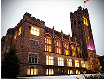

London Arch
Architecture
Middlesex County Court House

1926
The building at 399 Ridout Street North, commonly known as Middlesex County Court House, is situated south of Dundas Street, and north of King Street in the County of Middlesex in the City of London. The building was designed in the Gothic Revival style by Toronto architect John Ewart, and constructed from 1827 to 1829. The building, which included the court, jail and police office administrative offices, was constructed from locally quarried stone. ...

2018
The University of Western Ontario
1924
The university was founded on 7 March 1878 by Bishop Isaac Hellmuth of the Anglican Diocese of Huron as "The Western University of London Ontario". It incorporated Huron University College, which had been founded in 1863. The first four faculties were Arts, Divinity, Law and Medicine. The Western University of London became non-denominational in 1908. Beginning in 1919, the university has affiliated with several denominational colleges. ...
2018
St. Peter's Cathedral Basilica
1931
St. Peter's Cathedral Basilica, is a church located at 196 Dufferin Avenue in London, Ontario, Canada for the seat of the Roman Catholic Diocese of London. The parish now known as St. Peter's was established 10 August 1834 and the first church was constructed of logs at the southwest corner of Dufferin Avenue and Richmond Street. Prior to this, a travelling priest visited the area to celebrate Mass for Catholic residents. The church was dedicated to St. Lawrence and could hold 180 people. ...
2018